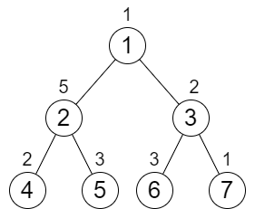
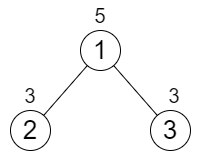

| Category | Difficulty | Likes | Dislikes |
|---|---|---|---|
| Algorithms | Medium | 661 | 16 |
array | dynamic-programming | greedy | tree | binary-tree
tiktok
You are given an integer n representing the number of nodes in a perfect binary tree consisting of nodes numbered from 1 to n. The root of the tree is node 1 and each node i in the tree has two children where the left child is the node 2 * i and the right child is 2 * i + 1.
Each node in the tree also has a cost represented by a given 0-indexed integer array cost of size n where cost[i] is the cost of node i + 1. You are allowed to increment the cost of any node by 1 any number of times.
Return the minimum number of increments you need to make the cost of paths from the root to each leaf node equal.
Note:
Example 1:

Input: n = 7, cost = [1,5,2,2,3,3,1]
Output: 6
Explanation: We can do the following increments:
- Increase the cost of node 4 one time.
- Increase the cost of node 3 three times.
- Increase the cost of node 7 two times.
Each path from the root to a leaf will have a total cost of 9.
The total increments we did is 1 + 3 + 2 = 6.
It can be shown that this is the minimum answer we can achieve.Example 2:

Input: n = 3, cost = [5,3,3]
Output: 0
Explanation: The two paths already have equal total costs, so no increments are needed.
Constraints:
3 <= n <= 105n + 1 is a power of 2cost.length == n1 <= cost[i] <= 104